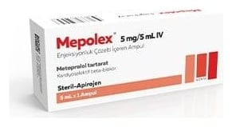

Mepolex 5 mg/5 ml IV Enjeksiyonluk Çözelti, 1 Ampul

Ne için kullanılır
KT · Bölüm 1MEPOLEX içerisinde metoprolol tartarat vardır. MEPOLEX steril, berrak ve renksiz enjeksiyonluk çözelti içeren ampuller içinde sunulur. Her kutuda 5 ml’lik ampul olarak pazarlanmaktadır. Metoprolol beta-blokerler adı verilen bir sınıfa dahildir ve bir beta-l-selektif beta-blokeridir. Metoprolol ile tedavi kalpte bulunan beta-1-reseptörleri üzerindeki stres hormonlarının etkisini azaltmaktadır. Kalp atımlarının yavaşlamasına, kalpte ritm bozukluklarının önlenmesine ve tedavisine, aynı zamanda tansiyonun düşürülmesine neden olur.
MEPOLEX aşağıda belirtilen tedavilerde kullanılmaktadır:
• Kalp ritmi bozukluklarının önlenmesi ve tedavisinde • Kalp krizi tedavisinde